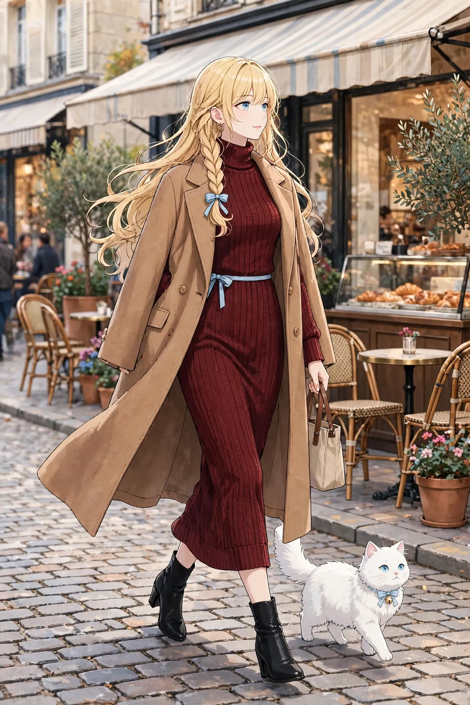
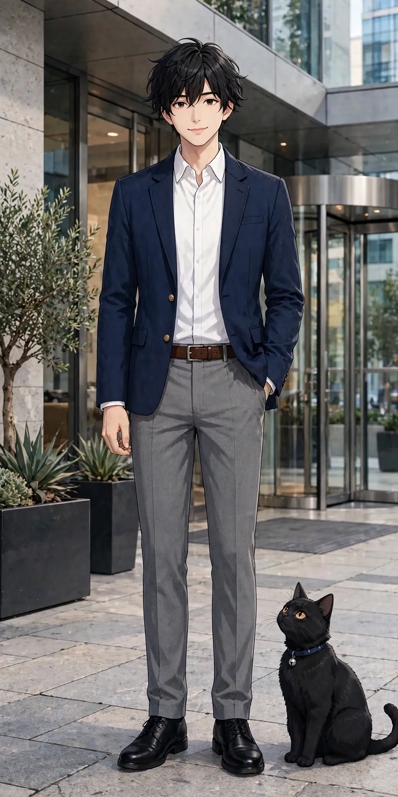
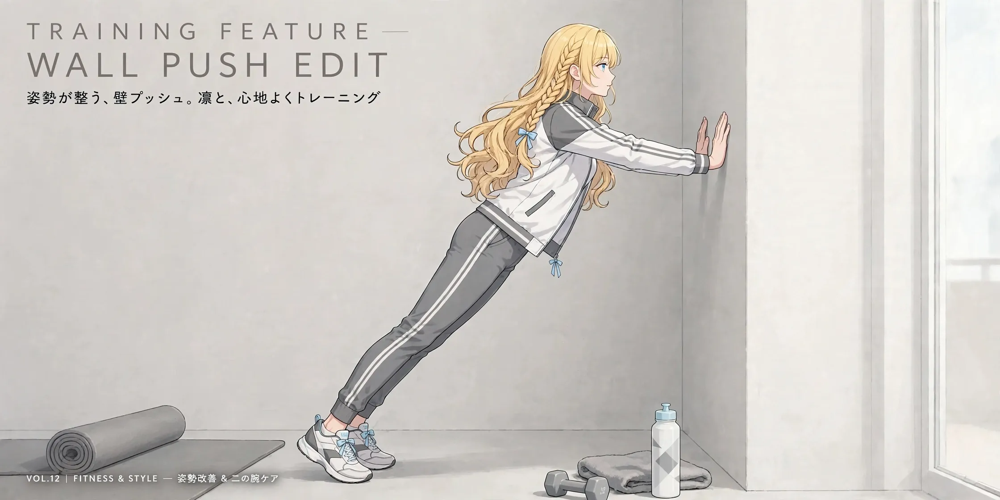

発表！冬の売れ筋
ランキング
ランキング
01デニムで脚を長く見せる股上の深さが決め手。40代の選び方
02画面映えする男のシャツテレワークの清潔感は襟と色
03壁プッシュで二の腕ケア服が似合う体づくり、5分から
04冬の売れ筋と冷え対策今月の特集ページで公開中
BEAUTIFUL POSTURE

WOMEN — EDITORIAL01 — WOMEN
女性｜体型カバーは、
女性｜体型カバーは、
切り替え位置で決まる
お腹・二の腕・ヒップは、服の切り替え位置と生地の落ち方で見え方が変わります。体を責めず、今の体に合う選び方を。案内はセラフィナと白猫ルミです。
1デニムで脚を長く見せる選び方（40代）股上30cm以上・丈・生地の落ち感。3つの目安と比較表
2ぽっこりお腹カバー ワンピースの選び方ウエストの切り替え位置とAラインの広がり方
3座りっぱなしの日も楽なワイドパンツウエストゴムと落ち感素材で選ぶ、仕事の日の一本
PR｜今月のピックアップ


02 — MEN
男性｜清潔感は、
男性｜清潔感は、
サイズ・シワ・色の3点
高い服より、合う服。清潔感はこの3点でほぼ決まります。案内はケントと黒猫ノクスです。

MEN — EDITORIAL